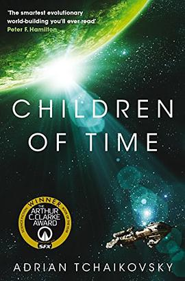

2022年5月
25 条
其中 4 条带正文
广播发布后不可编辑，所以每条都是那一刻的原话。
2022-05-30 09:50:16
 地心引力 / Gravity
地心引力 / Gravity2022-05-29 10:46:24
想看  彼此的距离 「千与千寻」特别篇 / ふたりのディスタンス『千と千尋の神隠し』スペシャル
彼此的距离 「千与千寻」特别篇 / ふたりのディスタンス『千と千尋の神隠し』スペシャル
2022-05-28 20:41:18
 乔乔的异想世界 / Jojo Rabbit
乔乔的异想世界 / Jojo Rabbit2022-05-27 08:09:27
想看  命运航班 第一季 / Manifest Season 1
命运航班 第一季 / Manifest Season 1
2022-05-24 16:01:16
想看  人生切割术 第一季 / Severance Season 1
人生切割术 第一季 / Severance Season 1
2022-05-24 15:59:34
在看  攻壳机动队：SAC_2045 第二季 / 攻殻機動隊 SAC_2045 Season 2
攻壳机动队：SAC_2045 第二季 / 攻殻機動隊 SAC_2045 Season 2
最近总算有些剧了
2022-05-22 12:08:57
看过  爱，死亡和机器人 第三季 / Love, Death & Robots Season 3
爱，死亡和机器人 第三季 / Love, Death & Robots Season 3
2022-05-22 08:22:56
在看  办公室 第四季 / The Office Season 4
办公室 第四季 / The Office Season 4
2022-05-22 08:22:54
看过  办公室 第三季 / The Office Season 3
办公室 第三季 / The Office Season 3
2022-05-20 22:00:02
在看 爱，死亡和机器人 第三季 / Love, Death & Robots Season 3
第一集还行，中规中矩
2022-05-15 14:51:36
看过  狙击手
狙击手
2022-05-15 10:17:44
 记忆裂痕 / Paycheck
记忆裂痕 / Paycheck感觉好像看过，但是又感觉好像没看过
2022-05-12 23:57:15
看过  奇异博士2：疯狂多元宇宙 / Doctor Strange in the Multiverse of Madness
奇异博士2：疯狂多元宇宙 / Doctor Strange in the Multiverse of Madness
2022-05-11 10:45:10
想读 
2022-05-08 11:52:32
 城堡 / The Castle
城堡 / The Castle2022-05-08 11:30:29
 神秘海域 / Uncharted
神秘海域 / Uncharted2022-05-08 07:51:06
想玩  最后生还者3 The Last of Us Part III
最后生还者3 The Last of Us Part III
害
2022-05-07 21:53:45
 黄泉之路 Trek to Yomi
黄泉之路 Trek to Yomi2022-05-07 16:04:08
 帕丁顿熊2 / Paddington 2
帕丁顿熊2 / Paddington 22022-05-07 16:03:13
看过  天才不能承受之重 / The Unbearable Weight of Massive Talent
天才不能承受之重 / The Unbearable Weight of Massive Talent
2022-05-05 16:14:39
 绞肉行动 / Operation Mincemeat
绞肉行动 / Operation Mincemeat2022-05-03 21:16:33
 狼狈 / ヘルタースケルター
狼狈 / ヘルタースケルター2022-05-03 17:06:32
想玩  小缇娜的奇幻之地 Tiny Tina’s Wonderlands
小缇娜的奇幻之地 Tiny Tina’s Wonderlands
2022-05-01 06:53:26
在看 办公室 第三季 / The Office Season 3
2022-05-01 06:53:12
看过  办公室 第二季 / The Office Season 2
办公室 第二季 / The Office Season 2